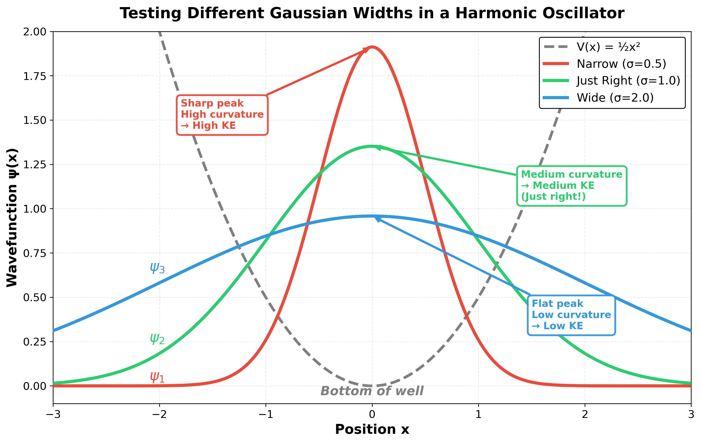
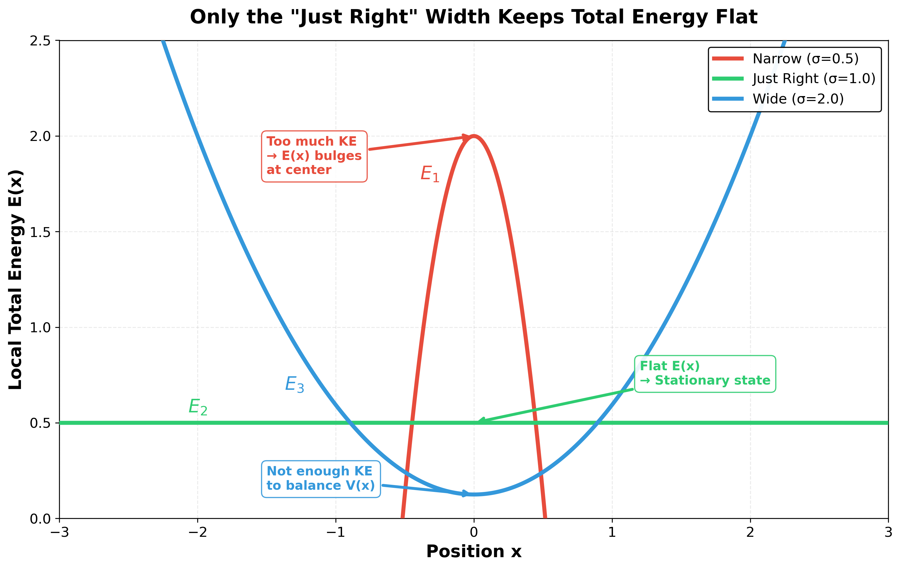

Quantum Mechanics: Foundations¶
Hand-Wavey Quick Derivation to Schrödinger's Equation¶
Let's start with a free particle (no potential, just moving in space) and work backwards to get Schrödinger's equation.
de Broglie Relations (1924)¶
By the 1920s, light was known to have both wave and particle properties: - Planck & Einstein showed photons have energy \(E = h\nu\) - Compton scattering (1923) confirmed photons have momentum \(p = h/\lambda\)
de Broglie's leap: If light waves have particle properties, maybe particles have wave properties with the same relations?
For matter waves, we use:
where \(\hbar = h/2\pi\), \(k\) is wave number, and \(\omega\) is angular frequency. Electron diffraction experiments soon confirmed it.
Free Particle Wave Function¶
A free particle moving in space can be described as a plane wave. We have two options:
- Real wave: \(A\cos(kx - \omega t)\)
- Complex wave (phasor): \(A e^{i(kx - \omega t)}\)
Why use the complex form?
This is a deep question! Here's the intuition:
- We know waves interfere (double slit experiment) - they add in and out of phase
- The cosine form can be written as a phasor using Euler's equation: \(e^{i\theta} = \cos\theta + i\sin\theta\)
- We need to calculate probability (which should always be positive, not oscillating between + and -)
- Complex form makes this easy: probability = \(|\psi|^2 = \psi^* \psi\) (multiply by complex conjugate)
But why does nature REQUIRE complex numbers? A real wavefunction can't capture all of quantum mechanics. Here's why:
-
Interference requires amplitude AND phase: When waves interfere, both the magnitude and phase matter. A single real number can't encode both - you need two real numbers (magnitude & phase), which is exactly what a complex number gives you: \(z = re^{i\theta}\)
-
Time evolution rotates the phase: The factor \(e^{-iEt/\hbar}\) rotates the wavefunction in the complex plane. This rotating phase is essential - it's what creates interference patterns and determines when waves add constructively vs destructively. Real numbers can't "rotate" like this!
-
The Schrödinger equation requires it: Notice the factor of \(i\) in \(i\hbar\frac{\partial\psi}{\partial t}\). This means time derivatives change the real part into the imaginary part and vice versa - the wavefunction must be complex for this to work!
Bottom line: Complex numbers aren't just mathematical convenience - they're fundamental to how quantum mechanics works. The phase of ψ contains physical information about interference and time evolution that can't be captured by real numbers alone.
So we use:
Deriving Schrödinger's Equation¶
Now let's take derivatives and use the de Broglie relations to connect them.
Time derivative:
Using \(E = \hbar\omega\):
Multiply both sides by \(i\hbar\):
Spatial derivative (twice):
Using \(p = \hbar k\):
Multiply both sides by \(-\hbar^2/2m\):
Setting them equal:
For a free particle, classical mechanics says \(E = p^2/2m\). So:
Therefore our two derivative expressions must be equal:
That's Schrödinger's equation for a free particle!
What does this mean? The time derivative extracts energy from the wave, the spatial derivative extracts kinetic energy (from momentum). For a free particle these are the same thing, so we get one equation. It's the quantum version of \(E = p^2/2m\).
Adding a Potential¶
If the particle is in a potential \(V(x)\), total energy = KE + PE:
Or more compactly:
where \(\hat{H} = -\frac{\hbar^2}{2m}\frac{\partial^2}{\partial x^2} + V(x)\) is the Hamiltonian operator.
Building Intuition: From Wave Packets to Stationary States¶
Position and Momentum Space (Fourier Transform)¶
A single plane wave \(e^{ikx}\) extends forever - not realistic for a localized particle.
Real particles are wave packets. Consider a state at fixed energy \(E\). We've factored out the time part \(e^{-iEt/\hbar}\), so we're looking at just the spatial part \(\psi(x)\). Start simple - add a few plane waves with different momenta:
Each \(A_n\) tells you the amplitude and phase of momentum \(k_n\). As a sum:
Now take the limit: spacing between \(k\) values → 0, sum → integral. The discrete amplitudes \(A_n\) become a continuous function \(\tilde{\psi}(k)\):
That's the Fourier transform. \(\tilde{\psi}(k)\) tells you "how much of momentum \(k\)" is in your wave packet.
Key insight: You can't have both narrow at once. - Narrow in position (localized) → wide spread in momentum - Narrow in momentum (definite p) → spread out in space - This is the uncertainty principle!
Quick derivation: From Fourier theory (like time-bandwidth product in signal processing), a wave packet localized to width \(\Delta x\) needs a spread in \(k\) of roughly \(\Delta k \sim 1/\Delta x\). Since \(p = \hbar k\), we have \(\Delta p = \hbar \Delta k\), giving:
The rigorous proof (using the commutator \([\hat{x},\hat{p}] = i\hbar\)) gives \(\Delta x \cdot \Delta p \geq \hbar/2\).
Time-Independent Schrödinger Equation¶
Now let's think about the time derivative in Schrödinger's equation.
From \(i\hbar \frac{\partial \psi}{\partial t} = E\psi\), we see: higher energy → faster time oscillation.
For states with definite energy (energy eigenstates), we can separate variables:
The time part is just a rotating phase \(e^{-i\omega t}\) where \(\omega = E/\hbar\). All the physics (probability, where the particle is) lives in \(\psi(x)\).
Plug this back into Schrödinger's equation:
The time derivative just brings down \(-iE/\hbar\), which cancels the \(i\hbar\), leaving:
Or written out fully:
That's the time-independent Schrödinger equation. It's an eigenvalue equation: find the functions \(\psi(x)\) and energies \(E\) that satisfy it.
Intuition: Wiggliness vs Potential¶
Here's the key physical insight from the time-independent equation.
Start with the Schrödinger equation and divide both sides by ψ:
Now the physics is crystal clear:
Left side: The second derivative ψ'' measures how much the wavefunction curves. Dividing by ψ itself gives the local kinetic energy.
Right side: Since total energy E = KE + PE, we have KE = E - V(x).
Why divide by ψ? When you localize (squeeze) a wavefunction, two things happen: it gets taller (higher amplitude at the peak) and sharper (higher curvature). Dividing by ψ separates these effects — ψ''/ψ captures just the sharpness of the curve, independent of the overall height. This is what determines the kinetic energy.
What this means:
- Low potential (V small) → right side is large → ψ''/ψ is large → ψ is very wiggly
- High potential (V large) → right side is small → ψ''/ψ is small → ψ is less wiggly
The equation literally says: the curvature of ψ (relative to its value) equals the local kinetic energy!
When you solve for ψ(x), it automatically adjusts its wiggliness to match the kinetic energy at each point. In regions where potential is low, the wavefunction oscillates rapidly. Where potential is high, it oscillates slowly (or even decays exponentially if V > E).
Why Can't a Particle Just Sit at the Bottom of a Well?¶
Classical vs Quantum Ground State¶
Classical intuition: If you put a ball in a bowl (harmonic oscillator potential), the lowest energy state is the ball sitting still at the bottom. Total energy = 0.
Quantum reality: This doesn't work! Here's why.
If we try to localize the particle tightly at the bottom of the well (making ψ very narrow), the wavefunction has high curvature. From the Schrödinger equation divided by ψ:
Squeezing ψ narrow increases its curvature (\(\psi''\)), making the left side large. This means the kinetic energy \(E - V(x)\) shoots up at the center, so \(E(x) = \text{KE}(x) + V(x)\) is not constant — meaning it's not a stationary state.
Finding the "Just Right" Width¶
Let's test three different Gaussian trial wavefunctions with different widths:

- ψ₁ (narrow, red): Sharp peak → high curvature at center → high KE
- ψ₂ (medium, green): "Just right" width — balances spread vs curvature
- ψ₃ (wide, blue): Flat peak → low curvature → low KE
Now let's check which one gives constant total energy \(E(x) = \text{KE}(x) + V(x)\):

- E₁ (red): Too much KE → \(E(x)\) bulges at center (not constant!)
- E₂ (green): Nearly flat \(E(x)\) → this is a stationary state!
- E₃ (blue): Not enough KE to balance the rising potential \(V(x)\) → \(E(x)\) varies
The Zero-Point Energy¶
Only ψ₂ (the "just right" width) gives approximately constant \(E(x)\) — this is the ground state of the harmonic oscillator. Notice:
- The wavefunction spreads out (can't be localized to a point)
- The particle has kinetic energy even in the ground state
- For this specific potential (\(V = \frac{1}{2}m\omega^2 x^2\)), the minimum energy is \(E_0 = \frac{1}{2}\hbar\omega\), not zero
This minimum energy is the zero-point energy — a purely quantum effect arising from the uncertainty principle. If you try to confine the particle too tightly (small Δx), its momentum uncertainty Δp increases, giving it kinetic energy. The ground state is the perfect balance between being localized enough to stay near the potential minimum, but spread out enough to avoid excessive kinetic energy.
Key insight: The time-independent Schrödinger equation is essentially saying "find the wavefunction shape where curvature (KE) and potential energy add up to the same constant everywhere." Only specific shapes (eigenstates) and energies (eigenvalues) work!
The Harmonic Oscillator: Explicit Solutions¶
Now that we understand why the ground state can't be at the bottom, let's see the actual solutions for the harmonic oscillator potential \(V(x) = \frac{1}{2}m\omega^2 x^2\).
Energy Levels¶
The allowed energies are:
Notice: - Evenly spaced by ℏω (like a ladder!) - Ground state (n=0): \(E_0 = \frac{1}{2}\hbar\omega\) (the zero-point energy we saw) - First excited (n=1): \(E_1 = \frac{3}{2}\hbar\omega\) - Second excited (n=2): \(E_2 = \frac{5}{2}\hbar\omega\)
The Wavefunctions in Position and Momentum Space¶
For convenience, define the natural length and momentum scales: \(x_0 = \sqrt{\hbar/(m\omega)}\) and \(p_0 = \sqrt{m\hbar\omega}\)
n=0 (Ground state): E₀ = ½ℏω
Position space:
Momentum space:
Both Gaussians! Fourier transform of a Gaussian is a Gaussian. This is the "just right" width we found.
Notice something special: the ground state has width ~ x₀ in position space and width ~ p₀ in momentum space. If you calculate Δx·Δp, you get exactly ℏ/2 — the minimum allowed by the uncertainty principle! This is why it's the lowest energy state: it's spread out just enough to minimize both position and momentum uncertainty.
n=1 (First excited): E₁ = 3/2ℏω
Position space:
Momentum space:
One node at origin (antisymmetric). Same functional form in both spaces!
n=2 (Second excited): E₂ = 5/2ℏω
Position space:
Momentum space:
Two nodes (symmetric). Again, same functional form!
Pattern: Higher n → more nodes → more wiggly → higher energy. The harmonic oscillator has beautiful symmetry between position and momentum.